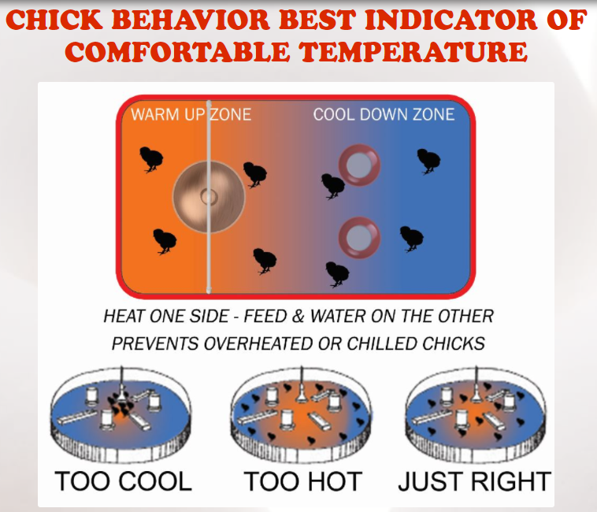

Chick Care Guide
Chicks will need a warm, draft-free, and safe environment to begin their new life. They also need a heat lamp, ONLY with a red light, for warmth purposes. Set them up in a sectioned-off piece of the barn, a horse watering trough, in your garage, or on an enclosed/covered porch. You don’t want to keep them into the house, beyond perhaps their first week, as they produce a great deal of dust. I know it can be tempting, but it is not worth it.
First Day Instructions
• Be sure you have some flexible time to pick up your birds from the post office and make plans to be home the first day and night to watch them. Sometimes the chicks do not arrive when expected.
• Have your brooder area set up and heating source tested. This will ensure the birds can go straight into the brooder as soon as they arrive.
• Have the brooder already heated to 100° because your chicks will not eat or drink unless their body temperature is 100°. Make sure there is room for them to get away from the heat once they get warm.
• Use 98° warm water for the first 2 hours, and dip their beaks in the water. Sometimes a few chicks lack the will to thrive, so you may need to dip their beaks numerous times throughout first 3 days.
• Refrain from handling or playing with the birds the first 3-5 days. This is an extremely important step. Your chicks will need the time to rebound from the stress of the trip, acclimate to their new environment, and GROW!
• Manure pasting up on the chicks’ rear end (Pasty butt or Sticky bottom) will back up the chicks’ bowels and kill them. If this happens it is important to remove it by using a warm damp cloth and gently wiping it off. I recommend adding Vinegar to their water as well if you have many sticky bottoms. If the chick(s) continue to have the issue after 2 days, you can take the chick starter feed and put it in a regular household blender and turn the chick starter crumble feed into a mash/powder. This will aid in the digestion and reduce pasty butts on the chicks for first 3-4 weeks.
• As your chicks grow, they need a warm environment. The temperature should be gradually decrease, by five degrees per week until the babies are ready to be moved outside at about 8 weeks of age.
• OBSERVATION IS KEY! If you notice your chicks crowding right beneath the heat source, this means they are cold. You can try lowering the heat lamp height, so it is closer to the chicks or adding another heat lamp. On the other hand, if you notice your chicks are spending more time near the edge of their living area or brooder, this means they are too hot and they're trying to get away from the heat source. If this is the case, simply raise the heat lamp.
We recommend for the 1st day to have the drinking water at 98 degrees (or very warm). The birds are small with little weight on them upon arrival. They will drink a lot of water, which if too cool, will rapidly reduce their body temperature, put them into shock and possibly make them sick.
• When placing the birds in the brooder, take each in your hand and hold their head between your fingers. Do a quick dip of the chick’s beak into the water, and then let go of the chick. You should see the chick look up and start swallowing. Do not repeat more than once or twice the chick will grasp the technique.
Normally, the chicks will NOT start to drink, eat, or move around until their body has warmed. At floor level, the temperature needs to be 100°-105°F directly under the heat source for the first few days. Then the temperature should be lowered to 100°F for the rest of the week. The temperature should be gradually decrease, by five degrees per week until the babies are ready to be moved outside at about 8 weeks of age. Be sure to have plenty of room available for the chicks to walk away from the heat source in case they become too warm.
Lay paper towels on the brooder floor sprinkled evenly with food. This has been known to help them recognize their food. Remove the paper towel once the chicks catch on and show interest in the feeder. This method should ONLY be used the first day.
If the chick becomes backed up (sticky bottom), it could result in fatality. It is important to remove this as needed. Pull off gently using a warm wash cloth.
Heating Instructions
Always use brand new bulbs. We have found that using a drop light with reflector shield is a good source of heat to get them started for the first couple of critical days.
• Use a 75, 100, 125, or 150 watt RED bulb. White heat lights are NOT recommended because the constant bright light from bulbs can stress the birds and cause health issues and picking.
• A guide is one brooder lamp per 25 chicks.
• Hang a reflector light from something secure to ensure that is does not fall and hurt the birds or burn anything. The wattage of the bulb you are using will factor in how high or low you hang it. (Generally start at about 14-18 inches above the brooder floor)
• Make sure there is plenty of room for the chicks to walk away from the heat source.

From days 3 through 7, the temperature in the brooder should be 95° to 100°F at floor level. After the first day, the temperature under the light should be 95°. Equally important, is enough space for a cool zone on the other side of the brooder.
Most baby chick loss is caused by the chick not starting to eat or drink due to them being too cold to move. The area needs to have a heat lamp at one side of the brooder to warm up, and an area to cool off and play. Warm chicks will spread out evenly and begin exploring their new home.
Litter
Large pine shavings will make a good litter. Plain card board, dry straw or hay can also make good bedding. Do NOT use small shavings or sawdust. The baby chicks that are learning to eat will eat it and possibly die. Do NOT use sand, because it can also be eaten by the birds, and cause their craw to have impaction. This will cause health problems and/or death.
I use plain cardboard so that I can easily clean the brooder out once a week, by throwing away and replacing the cardboard.
Do NOT use cedar or cypress shavings as they are highly toxic to poultry.
Safe Handling of Poultry
Live animals and pets can be a source of potentially harmful microorganisms (germs including salmonella and bacteria). Therefore, precautions must be taken when handling and caring for them to prevent fecal/oral transmission among people. Children should be supervised as they handle animals and pets to make sure they do not put their hands or fingers in their mouth.
ALWAYS wash your hands with soap and warm water after handling or caring for your chicks!!!
Chick Care Overview, DO and DON’T!
DO make sure chicks have access to fresh, clean water at all times. A waterer should be the correct size for your flock’s size and age — chicks should neither use up the available water quickly nor be able to tip over the fount. The basin should be high enough to keep the water level between a chick’s eye and the height of its back. This way, a chick drinks more and spills less. Chicks shouldn’t be able to roost over or step in the water.
DON’T be tempted to cut corners and provide water in an open dish or saucer. Chicks will walk in it, tracking litter and droppings that spread disease. They’ll tend to get wet and chilled, and the stress will open the way to disease. Some chicks may drown. Damp conditions in a brooder — whether caused by spilled water or a leaky waterer — are to be avoided. I have experienced an accidental downing, so take heed to this warning, I was able to revive my chick, but beginners may not be so lucky.
DO clean waterers daily. Use warm water and vinegar or other poultry-approved sanitizer. When choosing a waterer for your chicks, make sure to select one with a drinker that is easy to clean. A fount that’s hard to clean won’t be sanitized as often as it should be.
DON’T make chicks travel far for their water. Initially place drinkers no more than 24 inches (60 cm) from the chicks’ heat source. Later, as you move the chicks to expanded housing, make sure they never have to travel more than 10 feet (3m) to get a drink. When upgrading to a larger waterer, DO leave old waterers in place for a few days — at least until the chicks get used to drinking from the new source.
DO make sure chicks are drinking before they start eating. The first thing you should do when placing the chicks in their enclosure, show each one where the water is, by dipping their beak into the water and observing them drink. They seem to experience less of a problem with sticky bottoms if they a good dose of water before they get a belly full of feed, especially when the feed is commercially formulated chick starter.
DON’T feed layer ration to chicks, not even as an emergency measure if you run out of starter. The high calcium content of layer ration can seriously damage a chick’s kidneys. If you run out of starter, or you forget to pick some up and you have chicks to feed, you can make an emergency starter ration by cracking scratch grains in the blender or, if you have no scratch, by running a little uncooked oatmeal through the blender and mixing it 50/50 with cornmeal. Don’t use this mixture any longer than necessary, though — grains are high in calories and low in the protein, vitamins, and minerals a chick needs for good growth and health.
DO sprinkle a little starter ration and chick grit around. Soon after they hatch, chicks start looking for things to peck on the ground. If they don’t see anything else on the ground, they’ll peck their own feet. As soon as most chicks are pecking freely, change out the bedding source before it starts to hold moisture that attracts mold. For the remainder of the first week, put the starter in a shallow lid (mason jar lids are easy to clean) or tray, such as a shoebox lid. When the chicks start scratching out the feed, switch to a regular chick feeder.
DO choose a feeder that works for your space. A good feeder prevents chicks from roosting over or scratching in feed and has a lip to prevent billing out (wasting feed by scratching it out with their beaks). If your space is limited, use a feeder that has a small footprint. One such style is a base, like a drinker base, that screws onto a feed-filled quart (1 L) jar and has little openings through which the chicks can peck. If the brooder is roomy enough, the long Plastic Flip-top poultry feeder is a good option.
DON’T leave feeders empty or let uneaten feed accumulate. Fill feeders, and refresh (top off) daily. Leaving feeders empty for long periods of time invites picking, but letting stale or dirty feed accumulate is unhealthy, so strike a healthy balance. Clean feeders at least once a week or as needed.
DO spike water with vinegar for good gut health! Old-time poultry keepers spiked their chicks’ water with a tablespoon of apple cider vinegar per gallon (3.75 L). Chickens like it, and the poultry keepers saw positive effects. Could they have known that the beneficial bacteria and yeasts naturally colonizing a chick’s intestines prefer acidic conditions? I doubt it. The science of probiotics is all pretty new. But we know now some reasons why it was/is beneficial. Encouraging the growth of beneficial gut flora fends off harmful organisms through a process called competitive exclusion. Chicks raised in an incubator acquire beneficial gut flora more slowly than chicks raised under a hen, so to enhance their immunity, spike the water with vinegar (white or apple cider).